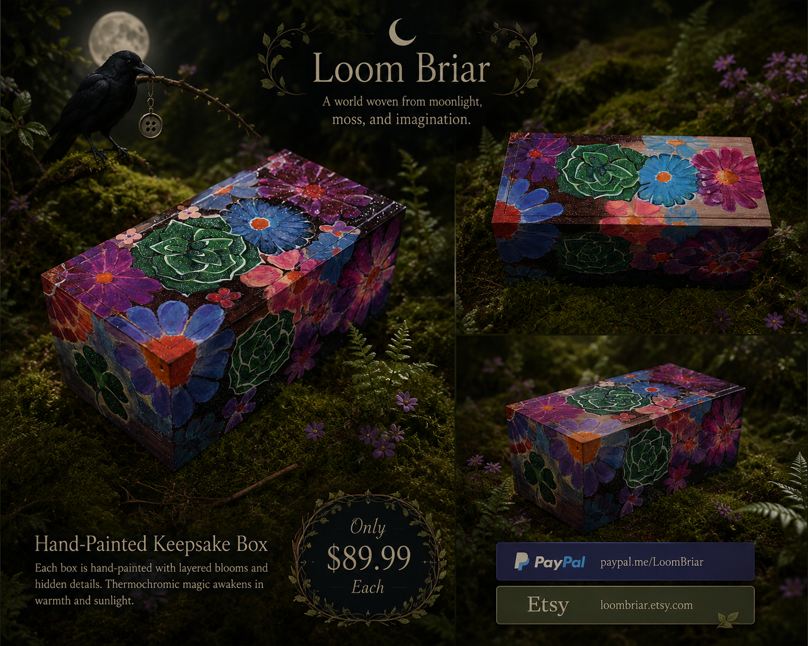
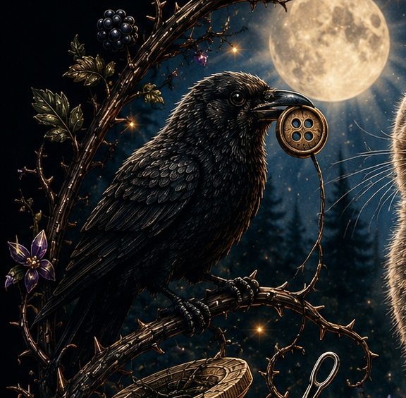
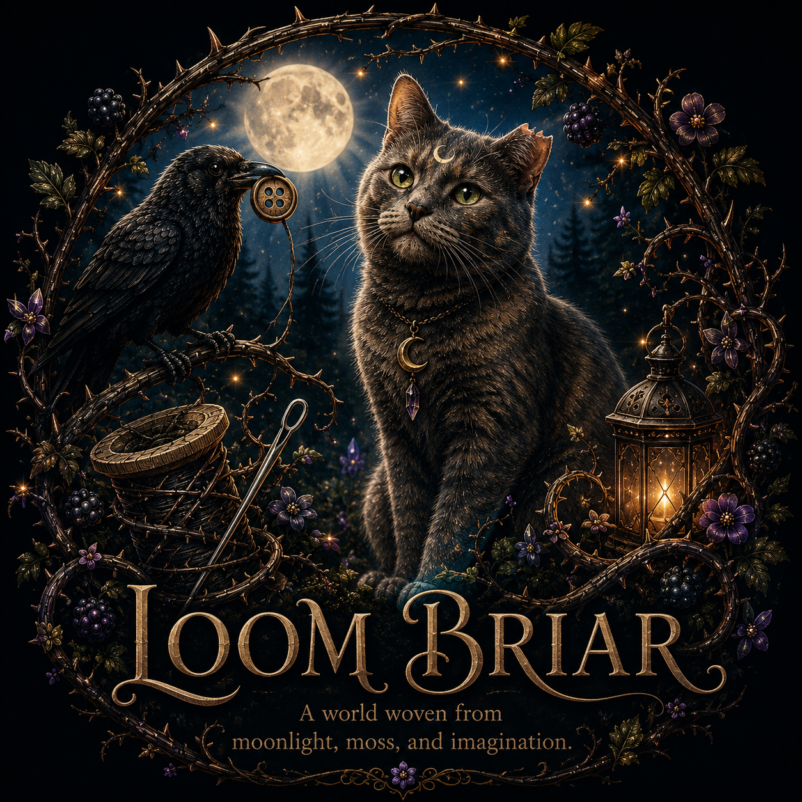
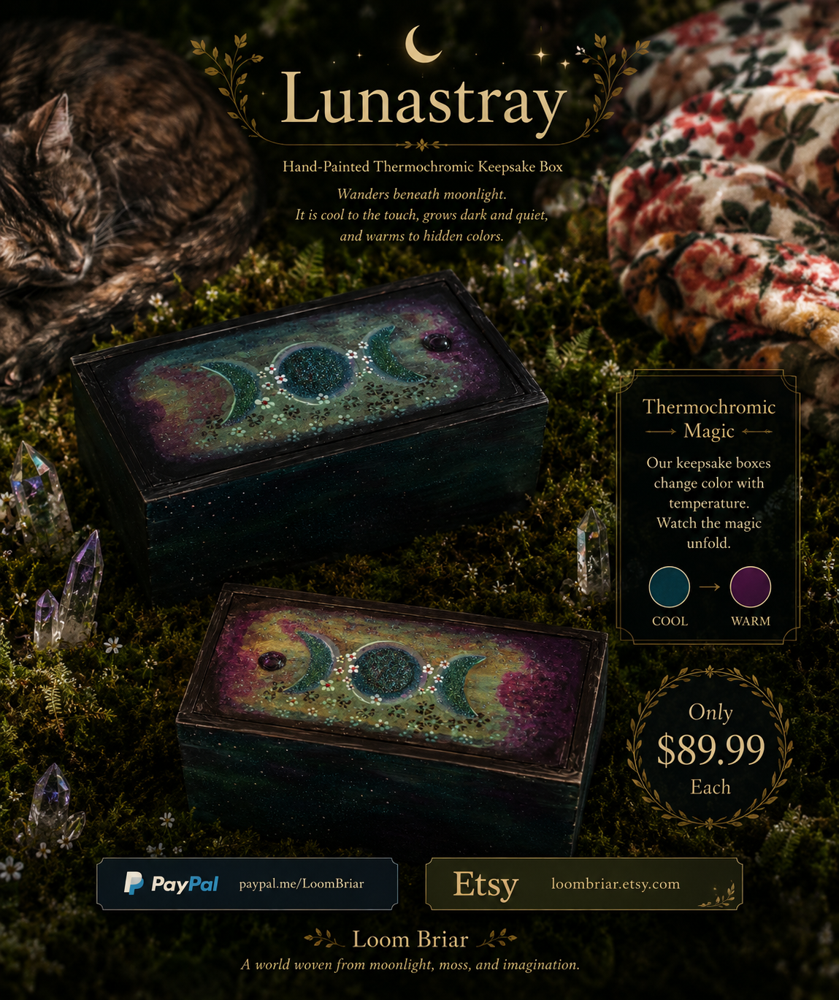
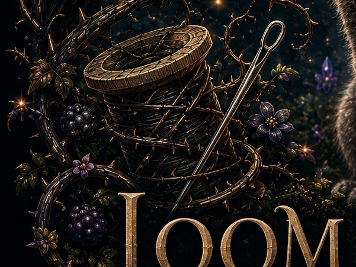

Color-changing keepsake
Briar Bloom
A hidden garden that awakens with warmth. Painted flowers and layered details transform as the thermochromic surface changes temperature.
$89.99

Beyond the thorns
Step softly beyond the thorns, where handmade treasures wait beneath the briars.
Step softly through the thorns
Loom BriarA world woven from moonlight, moss, and imagination.Welcome to
A world woven from moonlight, moss, and imagination.
Hand-painted keepsakes, color-changing artwork, live succulent cupcake planters, and tiny treasures inspired by the quiet magic of the Briar.
Tiny Living Gardens
Real living succulents planted by hand — not edible cupcakes.
Each Succulent Cupcake is a tiny living garden: a real succulent or cactus planted in a decorative cupcake-style cup. They are living plants made for gifting, desks, windowsills, and bringing a little piece of the Briar home.
LIVE PLANTS • $10 EACH • Hand planted with care.

The Briar Floor
Hand-painted. One of a kind. Made to hold decks, crystals, jewelry, letters, trinkets, and tiny secrets.

Color-changing keepsake
A hidden garden that awakens with warmth. Painted flowers and layered details transform as the thermochromic surface changes temperature.

Moonlit thermochromic keepsake
When cool, Lunastray darkens. As warmth reaches the surface, its lighter colors and celestial details emerge.


Hand-painted thermochromic keepsake
Where the Briar meets the sea, a quiet cat watches the horizon. The cat changes with temperature: dark in cooler conditions and pale in warm sunlight.
The Briar
Loom Briar is built around original, handmade work. Each piece develops one brushstroke, planted detail, shimmer, hidden color, and odd little touch at a time.
The moon, the briars, Pawdrey Hepburn, and the crow guide the world around the work. The Briar is the setting. The handmade piece is always the treasure.

Spirit of the Briar
Every strange little world needs a quiet guardian. Pawdrey Hepburn keeps watch beneath the moon while lantern light, fireflies, and crystals glow softly through the Briar.
Her clipped left ear is part of her story, and the little inverted moon on her forehead has become part of the Loom Briar mythology.
Beneath the moon, the Briar remembers.
A sound beyond the thorns
An old cuckoo clock with a Loom Briar twist: call it, and the crow slips out from behind the little doors.
Another resident is stirring
A curious little ferret-themed fixture is waiting in the wings — another odd resident of the Briar to build into the world as the collection grows.
The Briar Journal
A home for new pieces, experiments, changing colors, works in progress, clothing, living plants, and the small stories that grow around them.
A closer look at thermochromic layers and why every transformation develops a little differently.
Buttons, thread, crystals, mushrooms, pawprints, and the strange little details that become part of the world.
Real living succulents and cacti, hand planted in decorative cupcake-style cups. $10 each.
A secret beneath the briars

Even the guardian of the Briar has her upside-down moments.